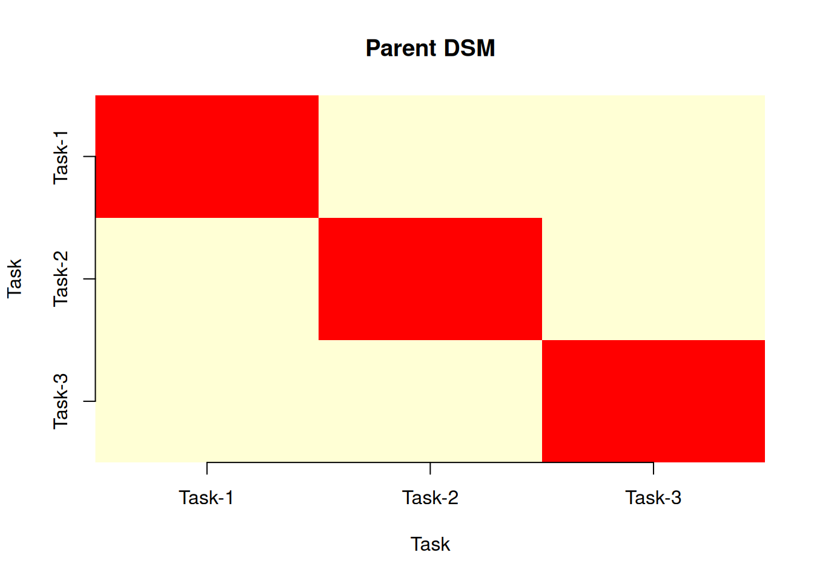
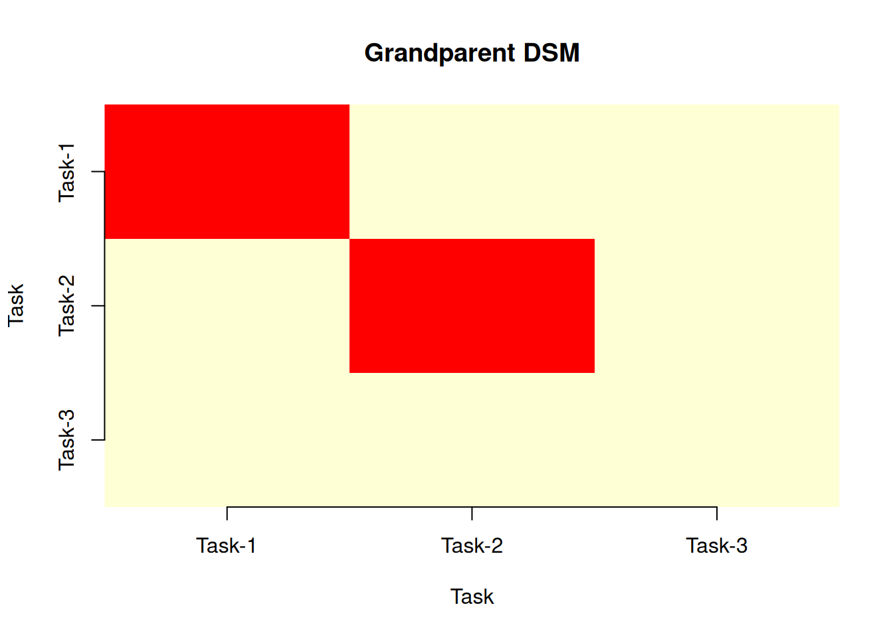

library(PRA)
set.seed(42)9 Everything Is Connected: Design Structure Matrices
“A complex system that works is invariably found to have evolved from a simple system that worked.” — John Gall
The previous chapter built a probabilistic network that showed how risk flows through resources into task costs. But the Bayesian network is a rich machine — conditional distributions, sampling, belief propagation. Sometimes you want a simpler question: which tasks are structurally coupled? Which pairs of tasks would fail together purely because they share the same crew, equipment, or material — regardless of the probability distributions involved?
The Design Structure Matrix (DSM) answers that question (Browning 2001; Steward 1981). And because this project’s structure already lives in the graph object built in the previous chapter, there is no need to construct the resource and risk matrices by hand — they can be derived directly from the network’s adjacency matrix.
9.1 What Is a DSM?
A DSM is a square matrix that maps dependencies between tasks in a project. In PRA, DSMs are derived from bipartite relationships: resources are shared across tasks, and risks are shared across resources. These shared dependencies create coupling between tasks that can propagate delays, cost overruns, or failures.
PRA provides two DSM functions:
parent_dsm(): the Resource-based “Parent” DSM: shows how many resources are shared between each pair of tasks.grandparent_dsm(): the Risk-based “Grandparent” DSM: shows how many risks are shared between task pairs (via the resource layer).
The key idea from the resource-based view of project management (Govan and Damnjanovic 2016): shared resources are the structural pathway through which risks propagate. If you want to understand why two tasks always seem to get delayed together, look at what resources they share.
In the PRA framework, the same adjacency matrix that encodes the Bayesian network’s topology also encodes the bipartite relationships needed to build S and R — no separate data entry required.
9.2 Rebuilding the Project Network
We continue with the software development project from Chapter 8. Rebuild the graph object to access its adjacency matrix.
nodes <- data.frame(
id = c("A", "B", "C", "D", "E", "F", "G", "H", "I"),
label = c(
"Risk-1", "Risk-2",
"Resource-1", "Resource-2", "Resource-3",
"Task-1", "Task-2", "Task-3",
"Project"
),
group = c(
"Risk", "Risk",
"Resource", "Resource", "Resource",
"Task", "Task", "Task",
"Project"
),
stringsAsFactors = FALSE
)
links <- data.frame(
source = c("A", "B", "C", "D", "E", "F", "G", "H"),
target = c("C", "D", "F", "G", "H", "I", "I", "I"),
value = rep(1, 8),
stringsAsFactors = FALSE
)
distributions <- list(
A = list(type = "discrete", values = c(1, 0), probs = c(0.70, 0.30)),
B = list(type = "discrete", values = c(1, 0), probs = c(0.60, 0.40)),
C = list(
type = "conditional", condition = "A",
true_dist = list(type = "normal", mean = 30000, sd = 8000),
false_dist = list(type = "normal", mean = 15000, sd = 3000)
),
D = list(
type = "conditional", condition = "B",
true_dist = list(type = "normal", mean = 80000, sd = 20000),
false_dist = list(type = "normal", mean = 50000, sd = 10000)
),
E = list(type = "normal", mean = 20000, sd = 4000),
F = list(type = "aggregate", nodes = c("C")),
G = list(type = "aggregate", nodes = c("D")),
H = list(type = "aggregate", nodes = c("E")),
I = list(type = "aggregate", nodes = c("F", "G", "H"))
)
graph <- prob_net(nodes, links, distributions = distributions)9.3 The Adjacency Matrix
The graph object exposes a full 9×9 adjacency matrix — one row and column for every node. Because prob_net() treats the network as undirected for structural purposes, both directions of each edge are recorded: an entry of 1 at [i, j] also appears at [j, i].
Internally, prob_net() labels rows and columns with node IDs. For readability, we rename them with node labels before displaying or extracting:
adj <- graph$adjacency_matrix
rownames(adj) <- graph$nodes$label
colnames(adj) <- graph$nodes$label
adj Risk-1 Risk-2 Resource-1 Resource-2 Resource-3 Task-1 Task-2 Task-3
Risk-1 0 0 1 0 0 0 0 0
Risk-2 0 0 0 1 0 0 0 0
Resource-1 1 0 0 0 0 1 0 0
Resource-2 0 1 0 0 0 0 1 0
Resource-3 0 0 0 0 0 0 0 1
Task-1 0 0 1 0 0 0 0 0
Task-2 0 0 0 1 0 0 0 0
Task-3 0 0 0 0 1 0 0 0
Project 0 0 0 0 0 1 1 1
Project
Risk-1 0
Risk-2 0
Resource-1 0
Resource-2 0
Resource-3 0
Task-1 1
Task-2 1
Task-3 1
Project 0The structural information we need — which resources connect to which tasks, and which risks connect to which resources — is already encoded here. We extract it by slicing adj using the group column of graph$nodes.
9.4 The Resource-Task Matrix
Rows are resource nodes (Resource-1, Resource-2, Resource-3); columns are task nodes (Task-1, Task-2, Task-3). The slice gives a binary matrix S where S[i, j] = 1 means resource \(i\) is used by task \(j\).
resource_labels <- graph$nodes$label[graph$nodes$group == "Resource"]
task_labels <- graph$nodes$label[graph$nodes$group == "Task"]
S <- adj[resource_labels, task_labels]
S Task-1 Task-2 Task-3
Resource-1 1 0 0
Resource-2 0 1 0
Resource-3 0 0 1The result is a 3×3 identity matrix: each resource is dedicated to exactly one task, with no cross-task sharing. This is a favorable project design — dedicated resources mean independent failure modes.
9.5 Parent DSM
The Parent DSM P = t(S) %*% S is a tasks-by-tasks matrix. The diagonal entry P[j, j] counts how many resources task \(j\) uses. The off-diagonal entry P[j, k] counts how many resources tasks \(j\) and \(k\) share.
p <- parent_dsm(S)
print(p)Resource-based 'Parent' Design Structure Matrix
Tasks: 3 Resources: 3
Task-1 Task-2 Task-3
Task-1 1 0 0
Task-2 0 1 0
Task-3 0 0 1plot(p)
All off-diagonal entries are zero: no two tasks share a resource. A disruption to the Business Analyst (Resource-1) hits Task-1 only — it does not propagate structurally into Task-2 or Task-3. This is the DSM’s way of confirming what the Bayesian network showed probabilistically: the three risk paths are disjoint.
9.6 The Risk-Resource Matrix
The Risk-Resource Matrix R adds a second layer. Rows represent risks (Risk-1, Risk-2) and columns represent resources (Resource-1, Resource-2, Resource-3). An entry R[i, j] = 1 means risk \(i\) affects resource \(j\).
risk_labels <- graph$nodes$label[graph$nodes$group == "Risk"]
R <- adj[risk_labels, resource_labels]
R Resource-1 Resource-2 Resource-3
Risk-1 1 0 0
Risk-2 0 1 0Risk-1 (Scope Creep) affects only Resource-1; Risk-2 (Technical Complexity) affects only Resource-2. Resource-3 (QA Engineer) is unaffected by either risk — consistent with the distributions in Chapter 8.
9.7 Grandparent DSM
The Grandparent DSM traces the dependency chain from risks through resources to tasks. The intermediate matrix T = R %% S gives a risks-by-tasks mapping, and the Grandparent DSM is G = t(T) %% T. Off-diagonal entries count how many risks are shared between each pair of tasks.
g <- grandparent_dsm(S, R)
print(g)Risk-based 'Grandparent' Design Structure Matrix
Tasks: 3 Resources: 3 Risks: 2
Task-1 Task-2 Task-3
Task-1 1 0 0
Task-2 0 1 0
Task-3 0 0 0plot(g)
The Grandparent DSM is also diagonal. Since each risk touches a different resource and each resource a different task, no two tasks share risk exposure through the resource layer. This clean structure is precisely what makes the Bayesian network’s total cost distribution well-behaved: the heavy tail in Chapter 8 comes from the risks themselves, not from structural coupling amplifying them.
9.8 Interpreting the DSM
- Diagonal values indicate the total number of resources (Parent) or risks (Grandparent) associated with each task. Higher values mean a task has more dependencies.
- Off-diagonal values indicate coupling between task pairs. Higher values mean more shared dependencies and greater potential for correlated disruption.
- Symmetric structure: both DSMs are always symmetric since shared dependencies are bidirectional: if task A shares a resource with task B, then task B shares that resource with task A.
This project has zero coupling — an idealized structure that real projects rarely achieve. The exercises below introduce shared resources and cross-resource risks to show how off-diagonal entries appear and what they mean.
9.9 From DSM to Decision
TipUsing the DSM to Prioritize Mitigation
- Find the highest off-diagonal values in the Parent DSM, as these task pairs share the most resources and are most likely to fail together.
- Identify those shared resources, the structural bottlenecks through which risk propagates.
- Inspect the Grandparent DSM for those same pairs; if they also share risks, the coupling is doubly reinforced.
- Prioritize mitigation on the shared resources with the highest combined Parent + Grandparent coupling: add contingency, build redundancy, or create buffers.
The Grandparent DSM goes one level deeper: it shows which pairs of tasks are exposed to the same risks. If you can eliminate or mitigate a risk, you simultaneously reduce coupling between all tasks that share that risk.
9.10 Summary
NoteDSM vs. Bayesian Network: When to Use Each
Both tools analyze the same project structure but answer different questions:
- Use the DSM for rapid structural triage: which tasks are coupled? Which resources are bottlenecks? No distributions required — only the resource-task and risk-resource linkages extracted from
graph$adjacency_matrix. - Use a Bayesian network when you need actual cost distributions, the ability to condition on observed evidence, or causal interventions (see Chapter 8). The same
graph$adjacency_matrixis the structural skeleton of the Bayesian network.
A practical workflow: run the DSM first to identify high-coupling task pairs, then focus the Bayesian network analysis on those pairs to quantify the probabilistic consequences.
9.11 Exercises
Reading the DSM. In the Parent DSM computed above, all off-diagonal entries are 0. What does this tell you about the software development project’s resource structure? Is this a favorable or unfavorable project design from a risk-propagation standpoint? What would need to change in the project for a non-zero off-diagonal entry to appear?
Extend the matrix. A Project Manager is added to the project and assigned to both Task-1 and Task-2. Add this resource to S and recompute the Parent DSM. Which entries change, and why?
S2 <- rbind(S, "Project Manager" = c(1, 1, 0)) p2 <- parent_dsm(S2) print(p2)Risk propagation. ★ Add a third risk (Risk-3, probability 0.40) that affects both Resource-2 (Developer) and Resource-3 (QA Engineer). Update R and recompute the Grandparent DSM. Which task pair now shares a risk? Describe in plain English the scenario where this coupling causes the most damage.
R2 <- rbind(R, "Risk-3" = c(0, 1, 1)) g2 <- grandparent_dsm(S, R2) print(g2)DSM symmetry. Both the Parent and Grandparent DSMs are symmetric. Why? Is there a project structure where the DSM would not be symmetric? (Hint: think about directed dependencies; what if one task uses a resource but another task produces it?)
From DSM to Monte Carlo. ★ Use the Parent DSM to derive a correlation matrix for MCS. With this project’s base S,
cor_from_dsmequalsdiag(3)— verify that the total variance under DSM-derived correlation matches the zero-correlation case. Then repeat the analysis using the extended S2 from Exercise 2, and compare the total standard deviation. What did adding the shared Project Manager add to the risk picture?p <- parent_dsm(S2) P <- p$matrix d <- sqrt(diag(P)) cor_from_dsm <- P / outer(d, d) diag(cor_from_dsm) <- 1 task_dists <- list( "Task-1" = list(type = "normal", mean = 20250, sd = 5900), "Task-2" = list(type = "normal", mean = 62000, sd = 16000), "Task-3" = list(type = "normal", mean = 20000, sd = 4000) ) res_zero <- mcs(10000, task_dists, diag(3)) res_dsm <- mcs(10000, task_dists, cor_from_dsm) cat("SD (zero correlation):", round(res_zero$total_sd, 0), "\n") cat("SD (DSM correlation): ", round(res_dsm$total_sd, 0), "\n")